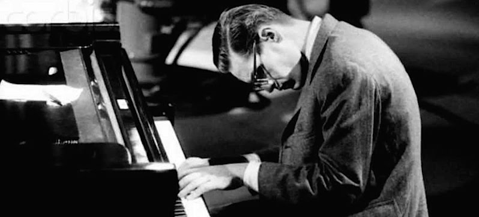

Bill Evans
Jazz Pianist

Bill Evans at the piano
- 1929 - Born in Plainfield, New Jersey
- 1956 - Appears as a sideman on Jazz Workshop with George Russell
- 1958 - Records Everybody Digs Bill Evans with Paul Chambers and Philly Joe Jones
- 1959 - Appears as a sideman on Mile's Davis's ablum Kind of Blue
- 1961 - Records the live recordings Live at the Village Vanguard and Waltz for Debbywith Scott LaFaro and Paul Motion
- 1963 - Records the multi-track solo album Conversations with Myself
- 1968 - Records the solo album Alone
- 1977 - Records You Must Believe in Spring with Marc Johnson and Joe LaBarbara